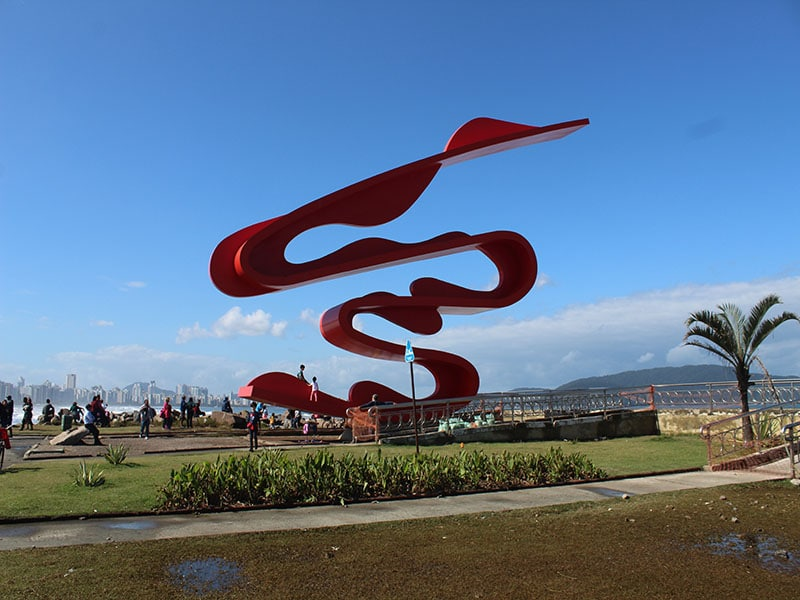
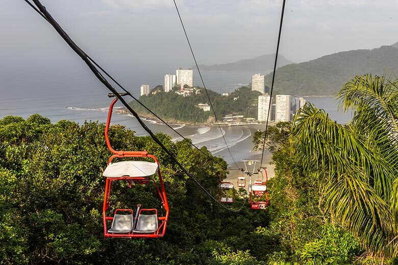
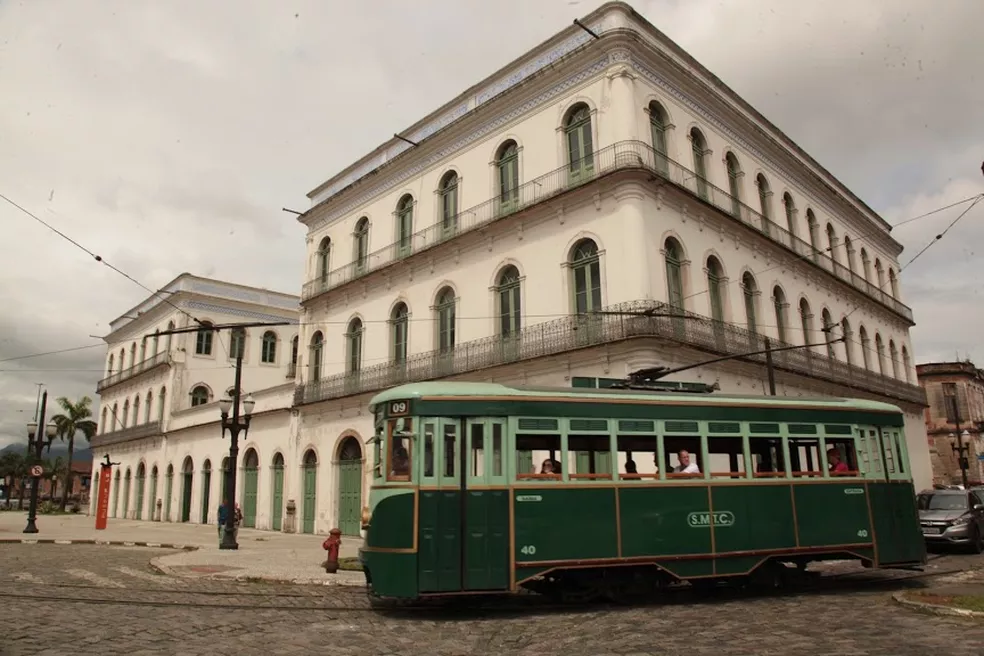

SANTOS
História de Santos
Santos foi fundada em 1546 por Brás Cubas, um dos primeiros povoadores da região, e logo se tornou o principal porto da capitania de São Vicente. A vila cresceu protegida por uma baía de águas calmas, o que facilitava a chegada e a saída de navios.
A grande virada veio no século XIX, com a expansão do café em São Paulo. A inauguração da ferrovia Santos–Jundiaí, em 1867, ligou o interior ao litoral, e o porto passou a escoar a produção cafeeira do país. Em 1892, começou a operar o porto organizado, que seguiu crescendo ao longo do século XX.
Hoje, Santos é a cidade mais populosa da Baixada Santista e abriga o maior porto da América Latina. Também é conhecida pela qualidade de vida, pela orla bem cuidada e pela forte ligação com o futebol e com o surfe.
Curiosidades
- Santos tem o maior jardim de orla do mundo, com mais de 5 km de extensão.
- O surfe no Brasil começou em Santos, em 1938.
- O Porto de Santos é o maior da América Latina e o mais movimentado do Brasil.
- A cidade é a casa do Santos Futebol Clube, time de Pelé.
- O Museu Pelé é o único museu do mundo dedicado a um atleta de futebol.
- O prédio do Museu do Café já foi a Bolsa Oficial de Café, onde se negociava o produto.
Pontos Turísticos
- Jardins da Orla – Faixa verde à beira-mar, ótima para caminhar, andar de bicicleta e relaxar.
- Aquário Municipal de Santos – Um dos mais tradicionais do país, com muitas espécies marinhas.
- Museu Pelé – Reúne troféus, fotos e objetos da carreira do Rei do Futebol.
- Museu do Café – Conta a história do café e do porto, em um prédio histórico no Centro.
- Bondinho Turístico – Passeio em bondes antigos pelo Centro Histórico.
- Monte Serrat – Morro com capela e vista panorâmica da cidade, com acesso por teleférico.
- Estádio Urbano Caldeira (Vila Belmiro) – Estádio histórico do Santos FC.
- Praias do Gonzaga, Embaré e Ponta da Praia – Pontos mais procurados para curtir o mar.


